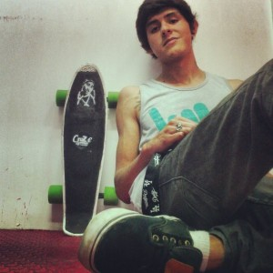

El Lalo Wolf ¡ Bienvenido al team !
22 diciembre, 2013¡Qué onda! hermanos del Cruz.e un gustaso saludarlos, espero ya no sean peatones tortugas con mala salud y nada de condición y estén saliendo a darle a sus cruz.es y explicarles el fin de este blog es transmitirles mis consejos y opiniones. Pero antes que nada presentarme soy Eduardo o mas conocido como Wolf por amigos y familia, originario de Guadalajara Jalisco aunque trotamundos por convicción, he vivido muchos cambios, pero hoy en día aquí en Guadalajara. Bueno soy un patinador mas para la marca Cruz.e y es irónica la vida de ….cómo es que llegue a Cruz.e (todo devido a un "accidente").
Todo comenzó cuando junto con mis mejores amigos Ximena y Abel o "Irremediable Salazar" empezamos a dedicarle tiempo a esta pequeña tabla; claro empezamos como todo patinando sin mucho equilibrio, caídas y más caídas. Únicamente que le empezamos a dedicar atención a patinar y descuidamos muchas otras cosas, no nos alimentamos bien, no dormimos lo suficiente por patinar todo el dia o como le llamamos estar en el pozo. Un buen día se me ocurrió salir a altas horas de la madrugada y tomar unas calles que no debía en ese momento así que se imaginaran que sucedió, me asaltaron y me golpearon con una manopla, para no hacerles el cuento largo me partieron la cara literalmente, me fracturaron todo el pómulo izquierdo así que en efecto no quede mas guapo!, fui socorrido por un chico que terminó siendo el dueño de Cruz.e pero aún no lo sabía,regresé a León Guanajuato con mis padres a curarme y me dijo la cirujana que no iba a poder patinar en 7 o 8 meses, pero saben no fue algo que me deprimió al contrario, saben mi opinión es que fue una lección de vida, además de que entable una gran amistad con mi socorrista "Fabio Xtream".
Ahora que ya conocen más de mi espero sigan mi sección de consejos y armemos una buena banda de cuates. Un salido y ha seguir dandole al skate.
